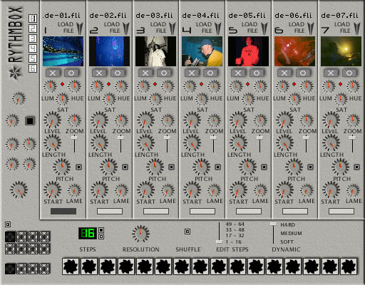

eleKtroniKa
help file
rythmbox module
mix
7 video loops (8 secondes) with somes effects

inputs/outputs
1 video out
usage
the rythmbox cut in
three part :
on the left, the main controls effects
on the down, the sequences and patterns
controls
and the seven tracks video loops
main effects
color fade,
zoom effect,
blur effect,
and master level.
video tracks (7x)
on each track you
can control the hue/saturation/luminosity,
level, zoom, pitch, start/lenght of the loop and a lame effect.
with the trigger you can set the blend effect of the track [fade, additive
or substrative]
to load a video just drag'n drop your AVI/MPG files on the desired track or
use the load button
warning: the HLS controls use more CPU time than other,
if you don't need them, set them to there middle position (no calculs)
sequence/pattern
the top left button
activate the pattern mode
the 8 buttons select the pattern
the 4 buttons just down select
the bank
the green number select the number of steps in the pattern,
resolution select the time stretch of the pattern
when the shuffle button is activated each loop turn at is own speed and don't
start at the first frame for each event
edit steps select the edit zone
and dynamic select the power of the event
to set an event just select the track with the large button on the video track
and click on the sequence zone (the 16 stars), to unset just click on a set
event.
copyright aestesis
2003
www.aestesis.org